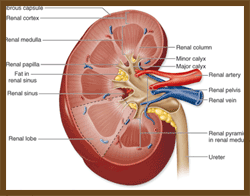

SERVICES
Regenerative Medicine Corporation will offer a one-of-a-kind opportunity to receive the gift of life to the recipients of its organs. Our company commercializes the research of Dr. Anthony Atala and his team at Wake Forest University's Center of Regenerative Medicine. Our core capability will be the regeneration of human kidneys using cells harvested from the patient's current kidney. Thus, with current organ regeneration rate equal to four weeks, our service offers a patient greater access to a life saving organ, and one that will not be rejected because it is grown from a patient's own cells.
Our researchers work closely with your medical professional to be sure to give you the highest level of service possible. Once we recieve the request from your doctor, we quickly get to work on regenerating your organ. The process of regeneration will normally take about four weeks. Find out more about the current transplant process at the National Kidney Foundation.
We will then ship the organ to where you are, saving you the expense of travelling to our location. Once your doctor recieves the regenerated organ, you will be able to recieve your transplant surgery at the comfort of your home location.
ORGANS
Regenerative Medicine has worked very closely with researchers all over the world to be sure to have the latest in regenerative organ research. While we currently specialize in kidney regeneration, we are also looking to expand into other areas such as:
- Livers
- Small Intestines
- Large Intestines
- Heart
- Lungs
- Nerves
Please check back often as we will be posting our latest information online.